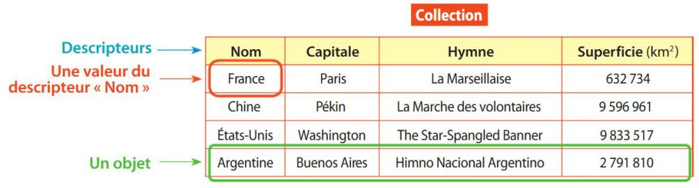
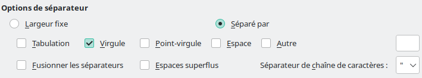
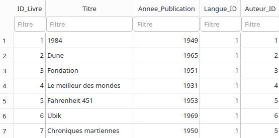

Sources
Ce cours ainsi que les images utilisées sont basés sur les ressources suivantes :
- SNT Delagrave 2de - 2023
- TD/TP Opale Jean Prouvé
- monlyceenumerique.fr
Résumé papier de ce cours
Vous pouvez ici télécharger la version PDF du résumé papier qui vous a été donné en classe :
À noter : Il s'agit ici d'un résumé du cours, mais je vous invite vivement à lire également le cours complet ci-dessous.
Cours - Les données structurées¶
Les données¶
Qu'est-ce qu'une donnée ?
Une donnée est un élément qui se rapporte à un objet, à une personne ou encore à un évènement.
Une donnée personnelle est une donnée qui identifie directement ou indirectement une personne physique.
Toute donnée répondant à la question "Qui ?", "Où ?", "Quand ?" ou "Comment ?" peut être considérée comme une donnée personnelle.
Il peut s'agir par exemple d'un nom, d'un numéro de téléphone, d'une photo, d'une date de naissance ou encore d'une empreinte digitale.
Vidéo : L'histoire des données
Voici une petite vidéo résumant l'histoire des données numériques.
Vidéo : Big data et utilisation des données
Qu'est-ce qu'une métadonnée ?
Une métadonnée est une donnée particulière qui apporte des informations supplémentaires sur la donnée principale.
Par exemple, dans le cas d'un courriel, les métadonnées sont par exemple l'expéditeur, le destinataire, la date d'envoi, le lieu, l'objet...
Un exemple : Métadonnées d'une photo
Lorsque vous prenez une photo avec un appareil photo ou un téléphone, vous pouvez enregistrer sans vous en rendre compte des données supplémentaires aux données de la photo en elle-même (c'est-à-dire aux données sur les pixels de l'image).
Par exemple, si l'on prend la photo suivante :
On peut, en faisant un clic droit sur l'image, en cliquant sur "Propriétés" et enfin en se rendant dans l'onglet "Détails", voir tout un tas d'informations sur la prise de vue (modèle de l'appareil ayant pris la photo, position GPS, date de la prise de vue, etc.)
Les données structurées¶
Les tables de données
L'organisation des données se fait sous la forme de tableaux appelés tables de données.
Une table de données est un tableau dont chaque élément (chaque ligne du tableau) est appelé objet, et chaque objet contient des valeurs associées à chaque descripteur.
Les descripteurs caractérisent les données et sont tous donnés sur la première ligne du tableau.
Une table de données, égalemment appelée collection, regroupe plusieurs objets partageant les mêmes descripteurs.
Voici un exemple de table de données :

Ici, il y a 4 descripteurs (Nom, Capitale, Hymne et Superficie) et 4 objets qui contiennent les données de 4 villes (France, Chine, Etats-Unis et Argentine).
Formats et représentation des données
Les données peuvent être organisées de différentes manières, de façon à s'adapter à des traitements spécifiques.
La manière d'oganiser les données est appelée format de données.
Parmi les formats les plus utilisées, on retrouve le CSV, le JSON et le XML
Le format CSV
Un fichier CSV est un fichier de texte permettant de représenter des données structurées.
Dans un fichier au format CSV, on écrit les descripteurs sur la première ligne.
Les autres lignes contiennent les valeurs des descripteurs pour chaque objet.
Chaque valeur est séparée par un séparateur (ou délimiteur), qui peut être par exemple la virgule, ou encore le point-virgule.
Voici un exemple de fichier CSV :
On retrouve bien les descripteurs en première ligne, et les autres lignes correspondent à 4 objets contenant les données sur 4 élèves de seconde.
Ici, le séparateur utilisé est la virgule.
Sur Windows, vous pouvez voir le contenu textuel d'un fichier CSV en l'ouvrant avec le bloc-notes ou le logiciel Notepad++ par exemple.
Ce format de données est compatible avec les tableurs, on peut donc ouvrir un fichier CSV dans un logiciel comme Excel ou LibreOffice Calc, mais il faut dans cas s'assurer de bien indiquer quel le séparateur utilisé :

Le format JSON
JavaScript Object Notation (JSON) est un format de données textuel dérivé de la notation des objets du langage JavaScript.
Une table de données au format JSON comprend des ensembles de paires « nom » (alias « clé ») / « valeur » placées entre accolades et séparées par des virgules.
Voici un exemple de table au format JSON :
Le format XML
Le format eXtensible Markup Language (XML) est un format basé sur l'utilisation de balises (de la même manière que le langage HTML) pour structurer les données. Les balises sont utilisées pour encadrer un contenu : il y a une balise ouvrante et une balise fermante.
Voici un exemple de table au format XML :
Les banques de données¶
Il existe des banques de données libres contenant des bases de données que vous pouvez librement télécharger dans plusieurs formats (CSV, JSON, Excel) et utiliser.
Par exemple :
- https://data.education.gouv.fr : plateforme mise en place par le gouvernement et contenant de nombreuses données du ministère de l'éducation nationale,
- https://www.data.gouv.fr/fr/ : d'autres données libres proposées par le gouvernement (données géographiques, agriculture, énergies...)
- https://donnees.banquemondiale.org/ : données de la banque mondiale,
- etc. Il en existe plein d'autres, pas uniquement francophones.
Traitement de données structurées¶
Le traitement des données peut prendre diverses formes : il peut s'agir d'effectuer une recherche, un tri des données, une estimation, un calcul, etc.
Pour réaliser ces opérations, des phrases logiques appelées requêtes sont exprimées dans un langage informatique. Une requête est constituée de mots-clés dans un ordre précis.
Requêtes avec un tableur
On peut effectuer des requêtes facilement en utilisant un logiciel de type tableur.
Parmi les logiciels les plus utilisés, on trouve :
- Microsoft Excel (propriétaire et payant),
- LibreOffice Calc (libre et gratuit),
- OnlyOffice Docs (propriétaire et gratuit).
On utilisera LibreOffice Calc, qui a l'avantage d'être libre et gratuit.
Je vous invite à relire attentivement le TP Tableur et à vous entraîner chez vous.
Pour télécharger LibreOffice sur votre machine personnelle, vous pouvez cliquer ici.
Le module Pandas en Python
Il est également possible de traiter des données avec le langage Python, en utilisant par exemple le module Pandas.
Pandas est une bibliothèque écrite pour le langage de programmation Python permettant la manipulation et l'analyse des données.
On peut utiliser Pandas pour charger un fichier CSV et effectuer des requêtes sur les données chargées.
Pour plus de détails, je vous invite à revoir le TP Titanic et sa correction.
Note : il n'est pas demandé de connaître les commandes Pandas par coeur pour l'interrogation.
Le langage SQL (programme de NSI)
Le langage SQL est un des langages les plus utilisés pour effectuer des requêtes sur une base de données.
Il s'agit d'un langage davantage étudié en terminale NSI.
Par exemple, imaginons que l'on souhaite faire une requête sur une table de données sur des livres appelée Livres, dont voici un extrait :

Si l'on souhaite par exemple récupérer l'année de publication du livre "Dune", on pourra écrire la requête :
Cela signifie que l'on sélectionne l'année de publication (SELECT Annee_Publication) dans la table nommée Livres (FROM Livres) qui correspond au titre "Dune" (WHERE Titre = 'Dune').
On peut bien sûr combiner plusieurs conditions, par exemple :
Cette fois, on sélectionne les identifiants (SELECT id) de la table nommée Livres (FROM Livres) pour lesquels l'année de publication est supérieure à 1990 ET l'identifiant de la langue est 1 (WHERE Annee_Publication > 1990 AND Langue_ID = 1).
Vidéo : Structuration des données et modèle relationnel
Voici une vidéo portant sur la structuration et l'organisation relationnelle des données que je vous invite à visionner.
Les données dans le cloud¶
Qu'est-ce que le cloud ?
Le cloud désigne l'accès à des ressources informatiques situées sur des serveurs distants par l'intermédiaire du réseau.
Ces ressources peuvent être toutes sortes de données, mais aussi des logiciels.
On peut automatiser le stockage de ses données sur le cloud en paramétrant la synchronisation des fichiers sur son ordinateur ou son téléphone. Cela facilite grandement le partage des données.
Google, Microsoft, Apple notamment ont leurs propres outils sur le cloud. Les différents outils peuvent ainsi partager des informations entre eux. On peut par exemple ouvrir un document dans Google Docs à partir de Google Drive.
Impact sur la consommation énergétique
La quantité de données stockées et traitées dans les centres de données (en anglais data centers) a énormément augmenté avec le développement des services basés sur le cloud.
Le cloud est ainsi devenu un des premiers consommateurs d'électricité dans le monde.
En l'occurence, les centres de données consomment 10% de l'électricité mondiale. Un seul centre de données consomme autant d'électricité de 30 000 habitants européens !
Les entreprises ont donc la nécessité d'adapter leurs technologies pour réduire leur impact écologique.